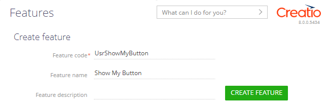

1. Настроить интерфейс страницы
-
Добавьте разрабатываемую функциональность, которую планируется скрыть.
-
Перейдите на страницу Функциональность (Feature) и заполните свойства функциональности:
- Код функциональности (Feature code) — "UsrShowMyButton".
- Имя функциональности (Feature name) — "Show My Button".
 - Нажмите кнопку Добавить функциональность (Create feature).
-
- Используя шаблон Данные и бизнес-процессы (Records & business processes), создайте пользовательское приложение Feature Service. Для этого воспользуйтесь инструкцией, которая приведена в статье Создать пользовательское приложение.
- В рабочей области страницы приложения Feature Service откройте страницу Страница записи Feature Service (Feature Service form page).
- Удалите поле Название (Name), которое по умолчанию добавлено на страницу Страница записи Feature Service (Feature Service form page).
-
Добавьте кнопку, которая содержит функциональность на этапе разработки.
- На панель инструментов Freedom UI дизайнера добавьте компонент типа Кнопка (Button).
-
На панели действий Freedom UI дизайнера нажмите на кнопку
 и на панели настройки заполните свойства кнопки:
и на панели настройки заполните свойства кнопки:- Заголовок (Title) — "Функциональность" ("Feature").
- Стиль (Style) — выберите "Основной" ("Primary").

- На панели действий Freedom UI дизайнера нажмите на кнопку
 . После сохранения настроек страницы открывается исходный код страницы Freedom UI.
. После сохранения настроек страницы открывается исходный код страницы Freedom UI.
2. Настроить скрытие функциональности на этапе разработки
Бизнес-логика настраивается в дизайнере клиентского модуля. В этом примере настроим скрытие функциональности на этапе разработки.
-
Подключите сервис проверки состояния функциональности sdk.FeatureService. Для этого добавьте в AMD-модуль зависимость @creatio/sdk.
-
В секцию viewModelConfig добавьте атрибут ShowMyButton, который хранит информацию о состоянии функциональности.
-
В секции viewConfigDiff привяжите свойство visible элемента FeatureButton к атрибуту ShowMyButton модели.
-
В секции handlers добавьте пользовательскую реализацию обработчика системного запроса crt.HandlerViewModelInitRequest. Обработчик выполняется при инициализации View модели.
- Создайте экземпляр сервиса проверки состояния функциональности из @creatio/sdk.
- Получите состояние функциональности с кодом UsrShowMyButton и запишите его в атрибут ShowMyButton.
Полный исходный код схемы страницы - На панели инструментов дизайнера клиентского модуля нажмите Сохранить (Save).
Результат выполнения примера
Чтобы посмотреть результат выполнения примера с функциональностью на этапе разработки:
- Перейдите на страницу приложения Feature Service и нажмите Запустить приложение (Run app).
- На панели инструментов приложения Feature Service нажмите Добавить (New).
В результате выполнения примера на странице приложения Feature Service скрыта кнопка Функциональность (Feature), которая содержит функциональность на этапе разработки.
Чтобы посмотреть результат выполнения примера с разработанной функциональностью:
-
Включите функциональность с кодом UsrShowMyButton.
- Перейдите на страницу Функциональность (Feature).
- В реестре страницы подключите функциональность Show My Button.
- Нажмите кнопку Сохранить изменения (Save changes) и обновите страницу.
- Обновите страницу приложения Feature Service.
- На панели инструментов приложения Feature Service нажмите Добавить (New).
В результате выполнения примера на странице приложения Feature Service отображается кнопка Функциональность (Feature), которая содержит разработанную функциональность.